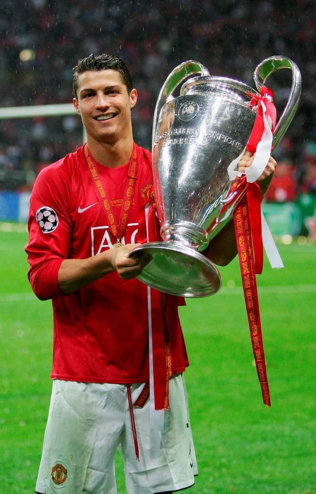
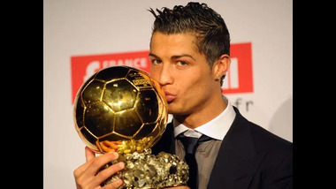
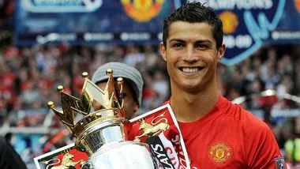
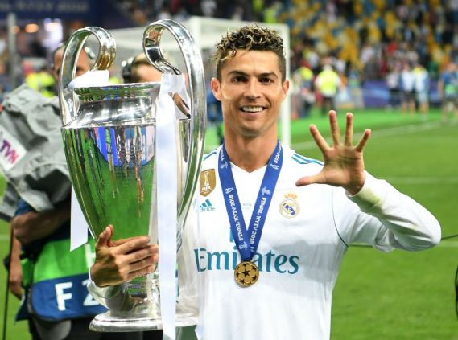
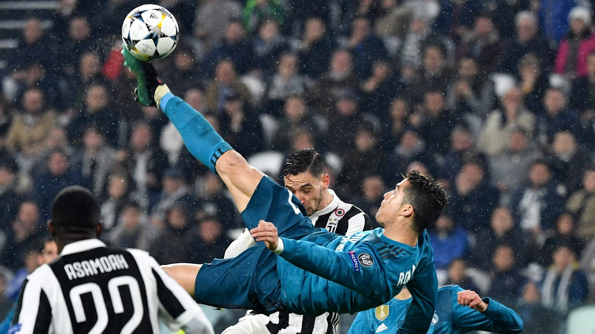
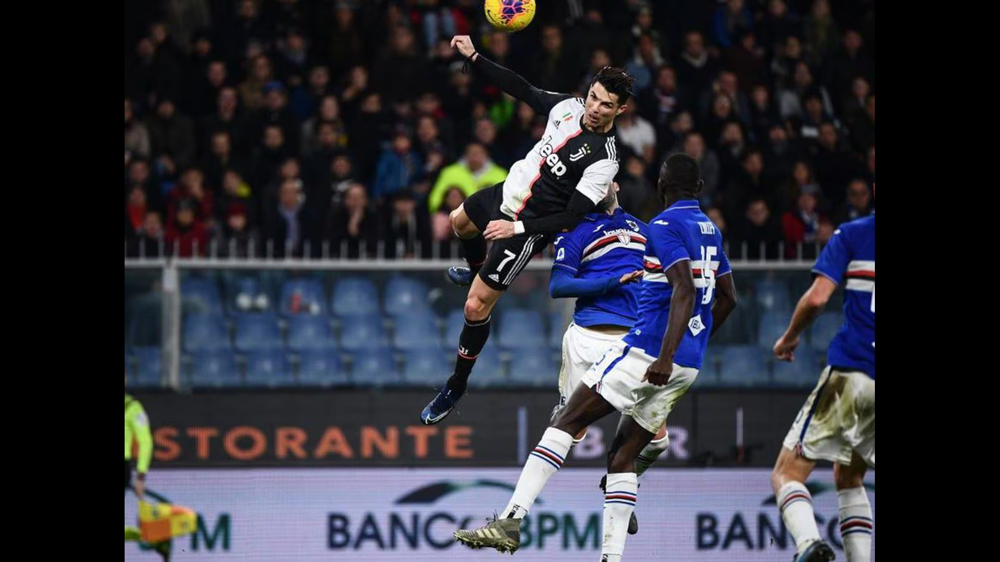
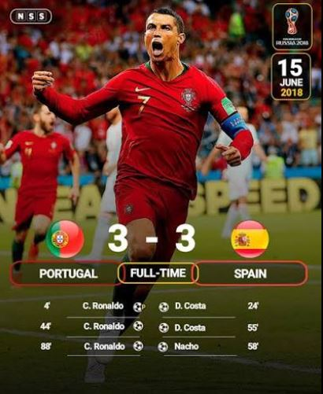

The Greatest Goal Scorer Of All Time

Cristiano Ronaldo is one of the greatest footballers in history. He has won multiple league titles,Champions leagues, Ballon d'or awards and scored hundreds of goals.
Throguhout his career, Cristiano ronaldo has won some of football's most prestigious trophies.His success across multiple countries demonstrates his adaptability and winning mentality
"Your love makes me strong,your hate makes me unstoppable"
Ronaldo joined Manchester United in 2003 under Sir Alex Ferguson. During his first spell,he won multiple Premier League titles, The UEFA Champions League and his first Ballon d'or in 2008.


In june 2009,Ronaldo joined Real Madrid for a then world record transfer fee of 80 million. He became the club's all time leading scorer and won four Champions League title with the club, creating one of the most successful periods in football history.

Ronaldo has represented Portugal for more than two decades. He captained the national team to victory at UEFA Euro 2016 and the UEFA Nations League,becoming a national icon

Ronaldo is known for his high speed,athleticism,powerful shooting, heading ability and goal scoring instincts.Throughout his career he adapted his style to remain one of the best players in the world.


One of Ronaldo's most admired qualities is his discipline. His dedication to training,fitness and self improvement has helped him remain at the highest level for many years.
Cristiano Ronaldo's influence extends beyond football. He has inspired millions around the world to work hard, chase their dreams and never give up in the face of challenges.
One of my favourite Ronaldo performances was his Hat trick against Spain in the 2018 FIFA World Cup.His leadership and determination helped Portugal secure a memorable draw.

Cristiano Ronaldo's journey from Madeira to global superstardom demonstrates what can be achieved through dedication,resillience, and relentless hard work.His story continues to inspire football fans around the world.